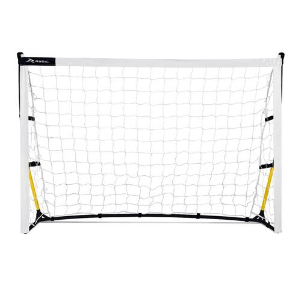

Runic Portería de Fútbol Portátil 1.8 m x 1.2 m / 6' x 4'.
PRODUCT DETAIL
Esta portería de fútbol portátil es fácil de armar, lo que la convierte en una
herramienta de entrenamiento y recreación ideal para los jóvenes deportistas.
Mide 6' de ancho y 4' de alto. Se arma y desarma en menos de 2 minutos.
Red de malla de nailon. Incluye bolsa de transporte y 4 estacas de tierra.